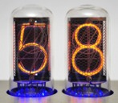
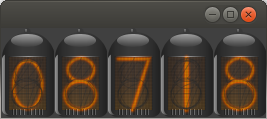

Ich hatte schon lange vor, Nixies als Anzeigen in Computerprogrammen zu verwenden. Ich denke, daß die Faszination dafür aus der Zeit herrührt, als wir im Physikunterricht ein Meßgerät mit genau solchen Anzeigen von unserem Lehrer vorgeführt bekamen.

Als ich mich ernsthaft daran machen wollte, eine solche Komponente zu schaffen, stellte ich fest, daß es vor mir bereits ein anderer getan hatte. Die visuelle Umsetzung dieser Variante war So., daß mir auch nach längerem Grübeln keine Verbesserung einfallen wollte. Bei Analyse des Quelltextes stellte ich jedoch fest, daß die Größe fest eingestellt war.Das verstand ich als Herausforderung und einige Stunden später war eine Komponente zur Anzeige ganzzahliger positiver Zahlenwerte entstanden, bei der der Anwender die Anzeigegröße bestimmen kann.

Die Abbildung zeigt eine Variante dieser Komponente mit 5 Stellen zur Anzeige positiver short-Werte.

Artikel, die hierher verlinken
FX-Komponente als Java-Version
02.12.2016
Ich wurde wieder einmal bei einer meiner Inspirationsquellen fündig und versuchte, die dort vorgestellte Komponente mit Java-Mitteln nachzuvollziehen.
Enzo-Komponenten durch JavaScript in dWb+
27.09.2015
Dieser Artikel beschreibt die Integration der Graphikbibliothek Enzo, deren Autor mich schon hin und wieder inspiriert hat.
7-Segment- und Nixie-Update
01.06.2013
Nachdem ich die Komponenten zur Anzeige numerischer Werte als Nixie-Röhren und 7-Segment-Anzeige implementiert hatte, wollte ich noch einen Schritt weitergehen - es sollte möglich werden, auch Kommazahlen damit anzuzeigen.
Mission-Timer-Komponente
17.05.2013
Als ich die Vorlage für meine Nixie-Komponente fand, fand ich dort auch eine interessante Umsetzung des NASA Missionstimers - eine Sache, aus der ich ebenfalls eine Komponente zur Zahlendarstellung machte.


Vor 5 Jahren hier im Blog
-
Links zu Docker, Container, Cloud
12.11.2017
Hier eine unsortierte Liste mit Artikeln zu den Themen Docker, Container und Cloud
Weiterlesen...
Tags
Android Basteln C und C++ Chaos Datenbanken Docker dWb+ ESP Wifi Garten Geo Git(lab|hub) Go GUI Gui Hardware Java Jupyter Komponenten Komponenten Git(lab|hub) Links Linux Markdown Markup Music Numerik PKI-X.509-CA Python QBrowser Rants Raspi Revisited Security Software-Test sQLshell TeleGrafana Verschiedenes Video Virtualisierung Windows Upcoming...
Neueste Artikel
- Struktur von PKIs re: Archivzeitstempel
Hier nochmal eine Beleuchtung der Organisation einer Public Key Infrastructure (PKI) von einem (von mir) bisher nicht betrachteten Blickwinkel
Weiterlesen... - Security QA mit Kotlin-Bibliotheken und Java
Über die Probleme und Herausforderungen beim Unit-Testen im Security-Umfeld mit Kotlin-Bibliotheken...
Weiterlesen... - Filestash im Docker-Zoo
Und wieder ist ein neuer Container in meinen Docker-Zoo aufgenomen worden.
Weiterlesen...
Manche nennen es Blog, manche Web-Seite - ich schreibe hier hin und wieder über meine Erlebnisse, Rückschläge und Erleuchtungen bei meinen Hobbies.
Wer daran teilhaben und eventuell sogar davon profitieren möchte, muß damit leben, daß ich hin und wieder kleine Ausflüge in Bereiche mache, die nichts mit IT, Administration oder Softwareentwicklung zu tun haben.
Ich wünsche allen Lesern viel Spaß und hin und wieder einen kleinen AHA!-Effekt...
PS: Meine öffentlichen GitHub-Repositories findet man hier.